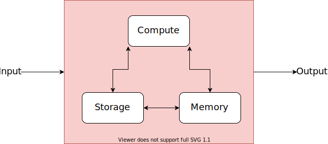

10 Choosing the right server for you
Data Science is a delightful mashup of statistics and computer science. While you can be a great data scientists without a deep understanding of computational theory, a mental model of how your computer works is helpful, especially when you head to production.
In this chapter, we’ll develop a mental model for how computers work, and explore how well that mental model applies to both the familiar computers in your life, but also more remote servers.
If you’re into pedantic nitpicking, you’re going to love this chapter apart, as I’ve grossly oversimplified how computers work. On the other hand, this basic mental model has served me well across hundreds of interactions with data scientists and IT/DevOps professionals.
And by the end of the chapter, we’ll get super practical – giving you a how-to on getting a server of your very own to play with.
10.1 Computers are addition factories
As a data scientist, the amount of computational theory it’s really helpful to understand in your day-to-day can be summarized in three sentences:
Computers can only add.
Modern ones do so very well and very fast.
Everything a computer “does” is just adding two (usually very large) numbers, reinterpreted.1
I like to think of computers as factories for doing addition problems.

We see meaning in typing the word umbrella or jumping Mario over a Chomp Chain and we interpret something from the output of some R code or listening to Carly Rae Jepsen’s newest bop, but to your computer it’s all just addition.
Every bit of input you provide your computer is homogenized into addition problems. Once those problems are done, the results are reverted back into something we interpret as meaningful. Obviously the details of that conversion are complicated and important – but for the purposes of understanding what your computer’s doing when you clean some data or run a machine learning model, you don’t have to understand much more than that.
10.1.1 Compute
The addition assembly line itself – where the work actually gets done – is referred to as compute. It’s where 2+2 gets turned into 4, and where 345619912 + 182347910 gets turned into 527967822. The heart of the factory in your computer is the central processing unit (CPU).
There are two elements to the total speed of your compute – the total number of cores, which you can think of as an individual conveyor belt doing a single problem at a time, and the speed at which each belt is running.
These days, most consumer-grade laptops have between 4 and 16 cores, and may have additional capabilities that effectively doubles that number. So most laptop CPUs can do between 4 and 32 simultaneous addition problems.
In your computer, the basic measure of conveyor belt speed is single-core “clock speed” in hertz (hz) – operations per second. The cores in your laptop probably run between 2-5 gigahertz (GHz): 2-5 billion operations per second.
10.1.1.1 GPU Computing
While compute usually just refers to the CPU, it’s not completely synonymous. Computers can offload some problems to a graphical processing unit (GPU). GPUs are specialized chips used for tasks like editing photo or videos, rendering video game graphics, some kinds of machine learning, and (yes) Bitcoin mining.
Where the CPU has a few fast cores, the GPU takes the opposite approach, with many slower cores. Where a consumer-grade CPU has 4-16 cores, mid-range GPUs have 700-4,000, but each one runs between 1% and 10% the speed of a CPU core.
For GPU-centric tasks, the overwhelming parallelism of a GPU is more important than the speed of any individual core, and GPU computation can be dramatically faster. For the purposes of data science, many popular machine learning techniques – including neural networks, XGBoost, and other tree-based models – potentially run much much faster on GPUs relative to CPUs.
10.1.2 Memory (RAM)
Your computer’s random access memory (RAM) is its short term storage. Your computer uses RAM to store addition problems it’s going to tackle soon, and results it thinks it might need again in the near future.
The benefit of RAM is that it’s very fast to access. The downside is that it’s temporary. When your computer turns off, the RAM gets wiped.2
Modern consumer-grade laptops come with somewhere between 4 and 16 Gb of memory.
10.1.3 Storage (Hard Drive/Disk)
Your computer’s storage is like a freezer. It keeps things permanently, whether the factory is operating or not. The tradeoff is that things there are cold, and take some time to warm up before they can be used.
A few years ago, all hard drives were (HDDs), and were basically the same. HDDs have a bunch of magnetic disks that spin very fast (5,400 and 7,200 RPM are common speeds). Magnetized read/write heads move among the disks and save and read your data.
In the last few years, solid-state drives (SSDs) have been taking over. SSDs, which are collections of flash memory chips, are up to 15x faster than HDDs. They also can take a wider variety of shapes and sizes, and are more reliable and durable because they have no moving parts. The main drawback is that they’re usually more expensive per byte, but prices are still quite reasonable.
Many consumer laptops have only an SSD at this point. Some desktops and high-end laptops combine a smaller SSD with a larger HDD.
10.2 Choosing the right data science machine
In my experience as a data scientist and talking to IT/DevOps organizations trying to equip data scientists, the same questions about choosing a computer come up over and over again. Here are the guidelines I often share.
10.2.1 Get as much RAM as feasible
In most cases, R and Python have to load all of your data into memory. Thus, the size of the data you can use is limited to the size of your machine’s RAM. Most other limits of your machine will just result in things being slower than you’d really want, but trying to load too much data into memory will result in a session crash, and you won’t be able to do your analysis.
It’s easy to say that you’ll always want more RAM, but a rough rule of thumb for whether you’ve got enough is the following:
Amount of RAM = max amount of data * 3
Because you’ll often be doing some sort of transformation that results in invisible data copies and your computer can’t devote all of its memory, you’ll want to leave plenty of room over your actual data size. I’ve never run into problems with a scaling factor of 3, but this is definitely only a rough rule-of-thumb.
10.2.2 Go for fewer, faster cores in the CPU
R and Python are single-threaded. Unless you’re using special libraries for parallel processing, you’ll end up red-lining a single CPU core while the other just look on in silence. Therefore, single core clock speed matters more than the number of cores, and fewer, faster cores are usually preferable to many slower
If you’re buying a laptop or desktop, there usually aren’t explicit choices between a few fast cores and more slow cores. Most modern CPUs are pretty darn good, and you should just get one that fits your budget. If you’re standing up a server, you often have an explicit choice between more slower cores and fewer faster ones.
10.2.3 Get a GPU…maybe…
If you’re doing machine learning that can be improved by GPU-backed operations, you might want a GPU. In general, only highly parallel machine learning problems like training a neural network or tree-based models will benefit from GPU computation.
On the other hand, GPUs are expensive, non-machine learning tasks like data processing don’t benefit from GPU computation, and many machine learning tasks are amenable to linear models that run well CPU-only.
10.2.4 Get a lot of storage, it’s cheap
As for storage – get a lot – but don’t think about it too hard, because it’s cheap. Both a 1TB SSD and a 4TB HDD are around $100. Storage is cheap enough these days that it is almost always more cost efficient to buy more storage rather than making a highly-paid professional spend their time trying to figure out how to move things around.
One litmus test of an IT organization that is well-equipped to support data science is whether they understand this. Smart organizations know that just getting more storage is easily worth the cost in terms of the time of admins and data scientists.
10.2.5 AWS Instance Classes for Data Science
TODO: base storage vs mounted
t3 – good b/c of instance credits, limited size
Cs – good b/c fast CPUs
R - good b/c high amount of RAM
P - have GPUs, but also v expensive
Instance scale linearly w/ number of cores (plot?)
10.3 Lab: Upgrading Instance Size
Ok, now we’re going to experience the real magic of the cloud – flexibility.
Now that we’ve got JupyterHub and RStudio Server up and running at stable paths, you might want to just use the terminals inside those environments rather than SSH-ing in. Up to you!
You get exactly the same terminal by logging in as test-user and using the terminal as you would from SSH-ing in.
We’re going to upgrade the size of our server in just a minute or two.
First, let’s confirm what we’ve got available. You can check the number of CPUs you’ve got with lscpu in a terminal. Similarly, you can check the amount of RAM with free -h. This is just so you can prove to yourself later that the instance really changed.
Now, you can go to the instance page in the AWS console. The first step is to stop (not terminate!) the instance. This means that changing instance type does require some downtime for the instance, but it’s quite limited.
Once the instance has stopped, you can change the instance type under Actions > Instance Settings. Then start the instance. It’ll take a few seconds to start the instance.
And that’s it.
So, for example, I changed from a t2.micro to a t2.small. Both only have 1 CPU, so I won’t see any difference in lscpu, but running free -h before and after the switch reveals the difference in the total column:
test-user@ip-172-31-53-181:~$ free -h
total used free shared buff/cache available
Mem: 966Mi 412Mi 215Mi 0.0Ki 338Mi 404Mi
Swap: 0B 0B 0B
test-user@ip-172-31-53-181:~$ free -h
total used free shared buff/cache available
Mem: 1.9Gi 225Mi 1.3Gi 0.0Ki 447Mi 1.6Gi
Swap: 0B 0B 0BI got twice as much RAM!
There are some rules around being able to change from one instance type to another…but this is an amazing superpower if you’ve got variable workloads or a team that’s growing. The ability to scale a machine so easily is a game-changer.
A lot of the things we did – adding the elastic IP and daemonizing JupyterHub are the reason that we’re able to bring it back up so smoothly.
You can do the same thing with attached volumes, resizing them on-the-fly. It’s worth noting that you can only revise volume sizes up, and that after resizing, you’ll have to adjust the Linux filesystem so it knows it can take advantage of the new space available. AWS has good walkthroughs available on how to resize the file system, so I won’t go into it in any detail other than to say it has to be done.
10.4 Comprehension Questions
Think about the scenarios below – which part of your computer would you want to upgrade to solve the problem?
You try to load a big csv file into pandas in Python. It churns for a while and then crashes.
You go to build a new ML model on your data. You’d like to re-train the model once a day, but it turns out training this model takes 26 hours on your laptop.
You design an visualization
Matplotlib, and create a whole bunch in a loop, you want to parallelize the operation. Right now you’re running on at2.smallwith 1 CPU.
Draw a mind map of the following: CPU, RAM, Storage, Operations Per Second, Parallel Operations, GPU, Machine Learning
What are the architectural differences between a CPU and a GPU? Why does this make a GPU particularly good for Machine Learning?
The reason why this is the case and how it works is fascinating. If you’re interested, it comes back to Alan Turing’s famous paper on computability. I recommend The Annotated Turing: A Guided Tour Through Alan Turing’s Historic Paper on Computability and the Turing Machine by Charles Petzold for a surprisingly readable walkthrough of the paper.↩︎
You probably don’t experience this personally. Modern computers are pretty smart about dumping RAM onto the hard disk before shutting down, and bringing it back on startup, so you usually won’t notice this happening.↩︎